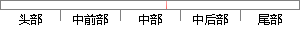

Cox回归模型是由英国统计学家D.
片段位置图

相似结果|
1
原句片段：Cox回归模型是由英国统计学家D.
相似片段 1：Cox比例风险回归模型,简称Cox回归模型。该模型由英国统计学家D. R. Cox于1972年提出,主要用于肿瘤和其他慢性病的预后分析,也可用于队列研究的病因探索。 优点:多...
相似片段 2：COX回归模型,又称“比例风险回归模型(proportional hazards model,简称Cox模型)”,是由英国统计学家D.R.Cox(1972)年提出的一种半参数回归模型。该模型以生存结局...
相似片段 3：常用的统计软件如SAS和spss都可以实现。Cox比例风险回归模型,简称Cox回归模型。该模型由英国统计学家D.R.Cox于1972年提出,主要用于肿瘤和其它慢性病的预后分析,也...
相似片段 4：Cox比例风险回归模型(Cox’s proportional hazards regression model),简称Cox回归模型。该模型由英国统计学家D.R.Cox于1972年提出,主要用于肿瘤和其它慢性病的预后...
相似片段 5：COX回归模型-Cox比例风险回归模型,简称Cox回归模型。该模型由英国统计学家D.R.Cox于1972年提出,主要用于肿瘤和其它慢性病的预后分析,也可用于队列研究的病因探索。
相似片段 6：Cox比例风险回归模型(Cox’sproportional hazards regression model),简称Cox回归模 该模型由英国统计学家D.R.Cox于1972年提出,主要用于肿瘤和其它慢性病的预后分析,...
相似片段 7：回答：Cox比例风险回归模型(Cox’s proportional hazards regression model),简称Cox回归模型。该模型由英国统计学家...
相似片段 8：Cox比例风险回归模型(Cox’s proportional hazards regression model),简称Cox回归 模型。 ? 该模型由英国统计学家D.R.Cox于1972年提 出,主要用于肿瘤和其它慢性...
相似片段 9：Cox比例风险回归模型(Cox’s proportional hazards regression model),简称Cox回归模型。该模型由英国统计学家D.R.Cox于1972年提出,主要用于肿瘤和其它慢性病的预后分...
相似片段 10：COX回归模型Cox比例风险回归模型,简称Cox回归模型。该模型由英国统计学家D.R.Cox于1972年提出,主要用于肿瘤和其它慢性病的预后分析,也可用于队列研究的病因探索。...
|
※ 片段修改建议 ※
近似词参考：- 模型：模子
系统自动生成语句：Cox回归模子是由英国统计学家D.
注：本片段修改建议为系统自动生成，仅供参考。